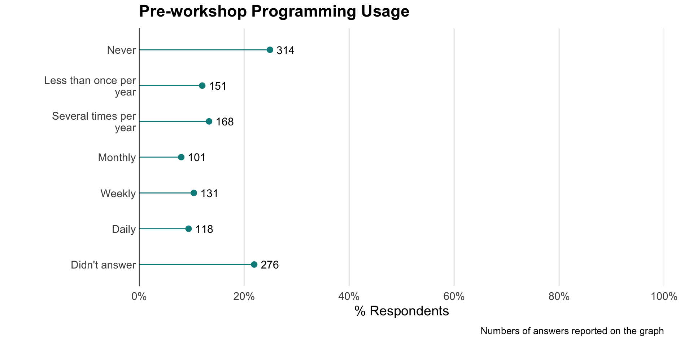

Analysis of Software and Data Carpentry’s Pre- and Post-Workshop Surveys
September 30, 2018
Overview
Since February 12, 2016, Software and Data Carpentry have collected information on learner demographics, perception of tools, and confidence in working with data. As a benefit of partnering with the Carpentries, the Assessment Team will release bi-annual reports of the results of pre- and post-workshop surveys, customized for each member organization.
This report covers the workshops from February 12, 2016 to May 21, 2018 for Software Carpentry, and from August 07, 2017 to May 11, 2018 for Data Carpentry.
As an overview, 1490 and 854 learners have responded to Data Carpentry pre- and post-workshop surveys respectively at your institution, while 1346 and 617 have responded to Software Carpentry workshop surveys.
This report includes the following:
- Motivation for Attending Carpentries Workshops
- Workshop Type and Perception of Workshop Environment/Experience
- Effect of Workshops on Learners’ Self-Reported Perspectives, Skills, and Confidence
- Ability to Perform Computing Tasks
- Demographics
- Summary
Motivation for Attending Carpentries Workshops
Understanding why learners attend Carpentries workshops may help you in your strategy to organize and host workshops. Remember, Data Carpentry’s workshops are domain-specific and focus on the fundamental data skills needed to conduct research. Many Data Carpentry workshops include lessons on data organization and include data cleaning with OpenRefine. From there, learners spend time learning a programming language, either Python or R, to manipulate and visualize data. Additionally, Data Carpentry workshops may include Cloud Computing and other topics.
Why are learners participating in your workshops?
Respondents were asked to check all that apply for several factors provided in the tables below.
| Why learners attend Data Carpentry workshops? (n = 1245) | n | % |
|---|---|---|
| To learn skills that I can apply to my current work | 1058 | 85.0 |
| To learn skills that I can apply to my work in the future | 960 | 77.1 |
| To learn skills that will help me get a job | 445 | 35.7 |
| As a requirement for my program/current position | 103 | 8.3 |
| Other | 47 | 3.8 |
85% of Data Carpentry learners attended workshops at your institution to learn skills they can apply to their current work.
Software Carpentry’s curriculum teaches basic lab skills for scientific computing. These workshops include automation with the Unix shell, version control with Git, and programming with R or Python. These tools help learners to increase the efficiency and reproducibility of their computational work.
| Why learners attend Software Carpentry Workshops? (n = 74) | n | % |
|---|---|---|
| To cover new/additional topics | 50 | 67.6 |
| To refresh/review skills | 36 | 48.6 |
| To network | 9 | 12.2 |
| To help host/run a workshop | 6 | 8.1 |
| To become a Software Carpentry helper/instructor | 6 | 8.1 |
| Other | 5 | 6.8 |
| Software Carpentry 1st Time Learners | n | % |
|---|---|---|
| Yes | 1050 | 78.0 |
| Didn’t answer | 219 | 16.3 |
| No | 77 | 5.7 |
Compared to Data Carpentry’s learners, Software Carpentry’s tend to have more experience with the tools covered in the workshops, and learners come to learn new and/or additional topics (67.6%). For the workshops at your institution, 78% of Software Carpentry respondents are first-time attendees.
What is the current level of satisfaction of the data management practices of your learners before attending workshops at your institution?

The majority (61.3%) of your Data Carpentry workshop respondents are either unsatisfied or feel neutral with their current data management practices. By data management practices, we mean behaviors such as keeping raw data raw, reusing code, and using databases, queries, and scripts to manage large data sets.
How often did your workshop participants program before attending a workshop at your institution?

In terms of current programming usage, 31.2% of learners either never use programming, use programming less than once per year, or no more than several times per year. Only 7.9% program on a daily basis.
| How respondents find out about Data Carpentry workshops (n =1243) | n | % |
|---|---|---|
| Received an email about the workshop | 802 | 64.5 |
| My friend/colleague told me about it | 324 | 26.1 |
| My advisor/supervisor told me about it | 244 | 19.6 |
| Read about it in a newsletter or university web site | 85 | 6.8 |
| Other | 49 | 3.9 |
| Other web site | 20 | 1.6 |
| Twitter or other social media | 17 | 1.4 |
| How respondents find out about Software Carpentry workshops (n = 985) | n | % |
|---|---|---|
| Institution mailing list or flyer | 514 | 52.2 |
| Friend/colleague | 420 | 42.6 |
| Other | 77 | 7.8 |
| Conference/meeting/seminar | 42 | 4.3 |
| Our website | 31 | 3.1 |
| Funding organization or program officer | 26 | 2.6 |
| Social Media (Twitter, Facebook, etc.) | 21 | 2.1 |
| Journal or publication | 3 | 0.3 |
Data Carpentry and Software Carpentry workshop participants often found out about our workshops through institutional mailing lists (64.5% and 52.2% respectively).
Workshop Type

| Data Carpentry: Language Covered in Workshops | n | % |
|---|---|---|
| R | 614 | 71.9 |
| Python | 118 | 13.8 |
| Didn’t answer | 60 | 7.0 |
| Neither | 57 | 6.7 |
| I don’t know./I don’t remember. | 5 | 0.6 |
As previously mentioned, Data Carpentry workshops are domain-specific, and curricula include Ecology, Genomics, Geospatial, Social Sciences, and Reproducible Research. 71.9% of respondents learned R in workshops at your institution, while 13.8% learned Python.
Perception of Workshop Environment and Experience
Comfort of the environment
We hope you share in our committment to making participation in workshops a harassment-free experience for everyone, regardless of who learners are, where they are from, or what their experience is with the tools we teach. We teach instructors to establish norms for interaction by having, discussing, and enforcing a Code of Conduct so that your workshops provide open and inclusive learning environments. 78.8% of Data Carpentry respondents from your workshops either agree or strongly agree that they felt comfortable learning in their workshop environment, and 91.7% of Software Carpentry’s respondents agreed or strongly agreed that the workshop atmosphere was welcoming.


Interaction with Instructors and Helpers
Your Data Carpentry workshop respondents were asked to rate their level of agreement with several statements regarding their instructors’ knowledge, instructional method, and enthusiasm. Their responses are in the figure below, and axis labels correspond to the statements as follows:
- Instructors Knowledge: The instructors were knowledgeable about the material being taught.
- Instructors Interacting: I felt comfortable interacting with the instructors.
- Instructors Enthusiastic: The instructors were enthusiastic about the workshop.
- Instructors Clear Answers: I was able to get clear answers to my questions from the instructors.

96.2% of respondents said they felt comfortable interacting with the instructors. 94.8% and 96.7% of respondents felt your instructors were knowledgeable about the material being taught, and were enthusiastic about the workshop, respectively. Lastly, 92.9% of respondents felt they were able to get clear answers to their questions from their instructors.
Software Carpentry respondents were asked to rate how they felt instructors and helpers worked as a team, based on the following criteria:
- Considerate: Instructors/Helpers were considerate.
- Enthusiastic: Instructors/Helpers were enthusiastic.
- Clear Answers: Instructors/Helpers gave clear answers to your questions.
- Communicators: Instructors/Helpers were good communicators.
The two neutral centered plots below provide an analysis of respondent’s answers for both instructors and helpers.


Applicability of the skills learned
One of the goals for Data Carpentry’s lessons is that learners are able to immediately apply what they learned at the workshop. The figure below shows that 65% either agree or strongly agree that they were able to apply what they learned immediately after attending a workshop at your institution.

Was the information covered in the workshops new?
49.6% of your Software Carpentry workshop learners either learned mostly or all new information during the workshop they attended, while another 20.3% learned something new.

Workshop Experience
| Data Carpentry Respondents Having Accessibility Issues | n | % |
|---|---|---|
| Yes | 79 | 9.3 |
| No | 654 | 76.6 |
| Didn’t answer | 121 | 14.2 |
Both Data Carpentry and Software Carpentry learners were asked to inform workshop organizers if there was anything they needed to make their workshop experience better. Data Carpentry’s respondents were asked if they had accessibility issues, and 9.3% reported they did. We recommend that you read through the open-ended responses included in the raw data to address any concerns regarding accessibility issues.
Net Promoter Score
We use the Net Promoter Score to measure learners’ likelihood of recommending workshops to a friend or colleague. The scoring for this question is on a 0 to 100 scale. Respondents scoring from 0 to 64 are labeled Detractors, and are believed to be less likely to recommend a workshop. Those who respond with a score of 85 to 100 are called Promoters, and are considered likely to recommend a workshop. Respondents between 65 and 84 are labeled Passives, and their behavior falls between Promoters and Detractors.
| Data Carpentry Net Promoter Score | n | % |
|---|---|---|
| Detractor | 32 | 3.7 |
| Passive | 131 | 15.3 |
| Promoter | 565 | 66.2 |
| Didn’t answer | 126 | 14.8 |
77.6% of your Data Carpentry respondents who answered this question are promoters (i.e. would recommend a workshop).
For Software Carpentry respondents who answered this questions, 57.8% are promoters.
Effect of Workshops on Learners Self-Reported Perspectives: Skills & Confidence
Your learners were asked to rate their level of agreement with the following statements related to Data Carpentry’s workshop goals and learning objectives. The figure below provides a visual representation of their responses, comparing them before the workshop and after the workshop. Axis labels and the corresponding question are organized around 3 themes as follows:
- Efficiency:
- Write Program: I can write a small program/script/macro to solve a problem in my own work.
- Programming Efficient: Using a programming language (like R or Python) can make me more efficient at working with data.
- Reproducibility:
- Raw Data: Having access to the original, raw data is important to be able to repeat an analysis.
- Analyses Easier: Using a programming language (like R or Python) can make my analyses easier to reproduce.
- Self-efficacy
- Search Online: I know how to search for answers to my technical questions online.
- Overcome Problem: While working on a programming project, if I get stuck, I can find ways of overcoming the problem.
- Programming Confident: I am confident in my ability to make use of programming software to work with data.
The scoring for the above factors ranges from strongly disagree (1) to strongly agree (5).

The comparison above is paired, meaning, we are comparing those who provided us with a unique identifier and who completed both the pre- and post-workshop survey. This figure includes 411 responses.
In the figures below, we show another representation of the pre- and post-comparison of respondents skills and perspectives. The figures below include the data for all learners, not only those who provided a unique identifier and took both the pre- and post-workshop surveys.
The neutral centered graphs below provide an even clearer picture of the shift in respondents’ self-reported confidence and skills.

Software Carpentry Respondents were asked to tell us about their experience with these topics before the workshop:
- R
- Unix Shell
- SQL
- Python
- Version Control with Git

From the figure, we see that your learners consider themselves beginners from the topics covered in your workshops. When asked their knowledge of the tools covered in their workshops, they rated their knowledge as extensive from 1% to 11% for “Git Knowledge” and “R Knowledge”.
The following is a comparison of your Software Carpentry respondents’ knowledge about the tools before compared to after the workshop.

Respondent Ability to Perform Computing Tasks
Motivation is important, but being confident in your ability to complete specific computing tasks is an equally important goal of Software Carpentry. The grid below shows respondents’ self-reported ability to complete tasks including:
- Pipes: Using pipes to connect shell commands
- Loops: Writing a ‘for loop’ to automate tasks
- Git: Initializing a repository with git
- Function: Writing a function
- Import Library: Importing a library or package in R or Python
- Unit Test: Writing a unit test in Python or R
- SQL Query: Writing an SQL query
It also provides their self-reported level of confidence in being able to complete the tasks above after completing the workshop.

These figures tell us that, before the workshop, between 27.1% and 69.6% of the respondents did not feel they could initialize a repository in Git, write a ‘for loop’ to automate tasks, use pipes to connect shell commands, write a SQL query, and/or write a unit test in R or Python. 26.3% of learners felt their confidence increased greatly with respect to importing a library or package in R or Python.
In summary, we hope that you will use the figures above as a resource to make the case to continue organizing Software and Data Carpentry workshops at your institution.
Demographics
Learners’ discipline
The distribution of your learners by discipline is provided below for both Data and Software Carpentry workshops held at your institution.
| Data Carpentry’s Respondents by Discipline | n | % |
|---|---|---|
| Life Sciences | 444 | 35.6 |
| Agricultural or Environmental Sciences | 307 | 24.6 |
| Bioinformatics/Genomics | 292 | 23.4 |
| Biomedical/Health Sciences | 288 | 23.1 |
| Other | 133 | 10.7 |
| Social Sciences | 122 | 9.8 |
| Mathematics or Statistics | 101 | 8.1 |
| Earth Sciences | 96 | 7.7 |
| Engineering | 91 | 7.3 |
| Computer Science | 88 | 7.1 |
| Business/Economics | 57 | 4.6 |
| Physical Sciences | 53 | 4.3 |
| Humanities | 53 | 4.3 |
| Library Sciences | 28 | 2.2 |
| Software Carpentry’s Respondents by Discipline | n | % |
|---|---|---|
| Life Science - Organismal/systems (ecology, botany, zoology, microbiology, neuroscience) | 222 | 22.3 |
| Life Sciences (Genetics, genomics, bioinformatics ) | 212 | 21.3 |
| Other | 184 | 18.5 |
| Mathematics/statistics | 99 | 9.9 |
| Physics | 82 | 8.2 |
| Planetary sciences (geology, climatology, oceanography, etc.) | 79 | 7.9 |
| Social sciences | 76 | 7.6 |
| Medicine and/or Pharmacy | 58 | 5.8 |
| Civil, mechanical, chemical, or nuclear engineering | 58 | 5.8 |
| Library and information science | 49 | 4.9 |
| Economics/business | 43 | 4.3 |
| Chemistry | 37 | 3.7 |
| Humanities | 36 | 3.6 |
| Psychology | 28 | 2.8 |
| High performance computing | 21 | 2.1 |
| Education | 19 | 1.9 |
| Space sciences | 9 | 0.9 |
Learners’ career stage
The figures below provide a breakdown of your learners by career stage for both Data and Software Carpentry workshops.
| Data Carpentry’s Respondents by Career Stage | n | % |
|---|---|---|
| Graduate Student | 592 | 47.6 |
| Research Staff | 200 | 16.1 |
| Postdoctoral Researcher | 183 | 14.7 |
| Faculty | 101 | 8.1 |
| Government Employee | 80 | 6.4 |
| Other | 79 | 6.4 |
| Industry Employee | 49 | 3.9 |
| Undergraduate Student | 48 | 3.9 |
| Management/Administrator | 20 | 1.6 |
| Retired/Not Employed | 18 | 1.4 |


Learners’ operating system
Gender and racial/ethnic identity information is collected for U.S. participants, as we are keen to increase the number of diverse instructors and learners we serve. This information is provided below for the learners attending your workshops.
| Operating System Respondents Use in Data Carpentry Workshops | n | % |
|---|---|---|
| Windows | 661 | 53.3 |
| Apple/Mac OS | 512 | 41.3 |
| UNIX/Linux | 50 | 4.0 |
| Not sure | 17 | 1.4 |
Gender and Racial/Ethnic Identity
| Data Carpentry’s U.S. Respondents’ Gender Identity | n | % |
|---|---|---|
| Female | 322 | 56.6 |
| Male | 223 | 39.2 |
| Transgender female | 2 | 0.4 |
| Transgender male | 0 | 0.0 |
| Gender variant/non-conforming | 0 | 0.0 |
| Prefer not to answer | 8 | 1.4 |
| Didn’t answer | 14 | 2.5 |
| Data Carpentry’s U.S. Respondents Racial/Ethnic Identity | n | % |
|---|---|---|
| American Indian or Alaska Native | 4 | 0.7 |
| Asian | 152 | 27.7 |
| Black or African American | 25 | 4.6 |
| Hispanic or Latino(a) | 57 | 10.4 |
| Native Hawaiian or Other Pacific Islander | 3 | 0.5 |
| White | 316 | 57.6 |
| I prefer not to say. | 28 | 5.1 |
| Other | 8 | 1.5 |
| Software Carpentry’s U.S. Respondents’ Gender Identity | n | % |
|---|---|---|
| Female | 361 | 53.7 |
| Male | 305 | 45.4 |
| Other | 0 | 0.0 |
| Prefer not to say | 6 | 0.9 |
| Software Carpentry’s U.S. Respondents’ Racial/Ethnic Identity | n | % |
|---|---|---|
| American Indian or Alaskan Native | 2 | 0.3 |
| Asian / Pacific Islander | 180 | 27.1 |
| Black or African American | 27 | 4.1 |
| Hispanic or Latino | 40 | 6.0 |
| Native Hawaiian or Other Pacific Islander | 1 | 0.2 |
| White / Caucasian | 344 | 51.7 |
| Multiple ethnicity / Other (please specify) | 29 | 4.4 |
| Prefer not to say | 42 | 6.3 |
Summary
This report focused on Data and Software Carpentry learners’ skills, perspectives, and experiences in your workshops. Our two-day coding workshops increase researchers’ daily programming usage, and confidence in working with open source tools. If you’d like to discuss the results from this report, please contact Kari L. Jordan, Director of Assessment and Community Equity for The Carpentries.